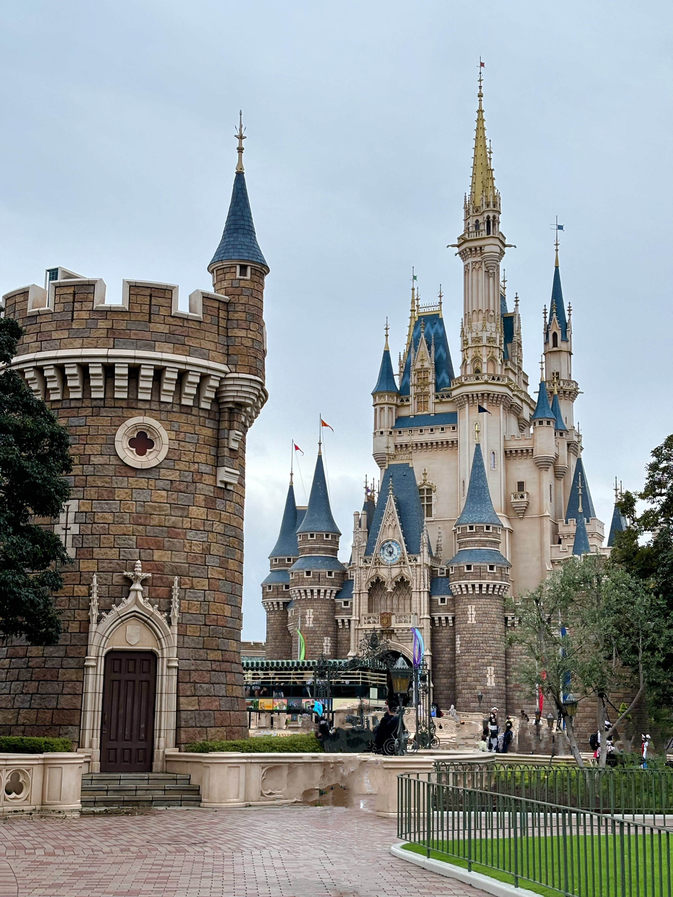
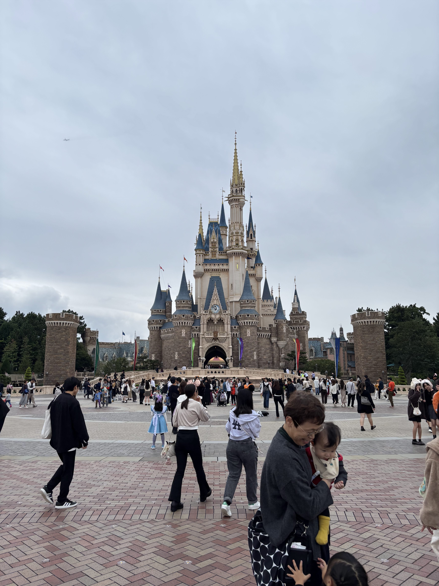
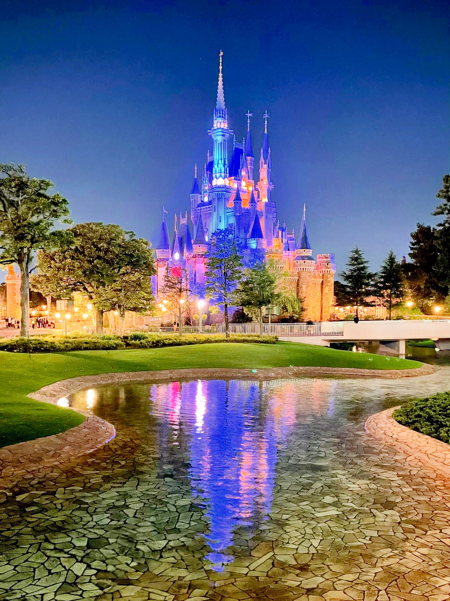
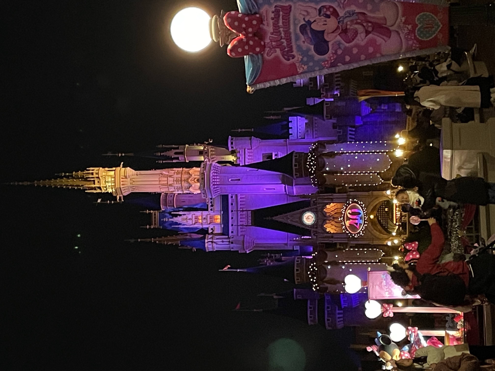
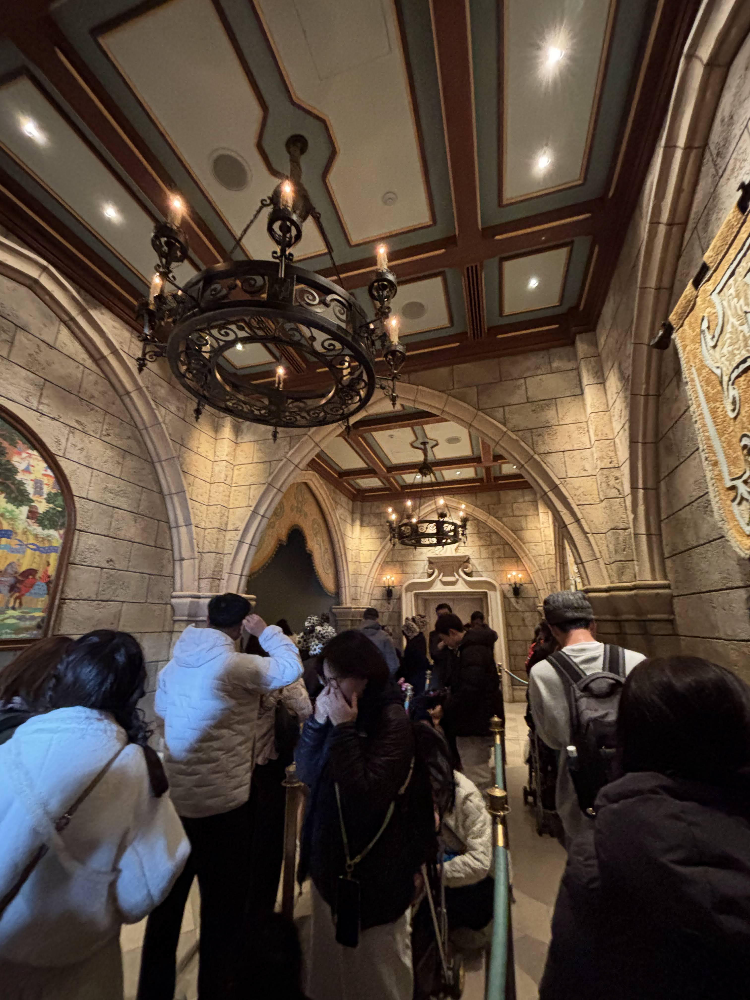
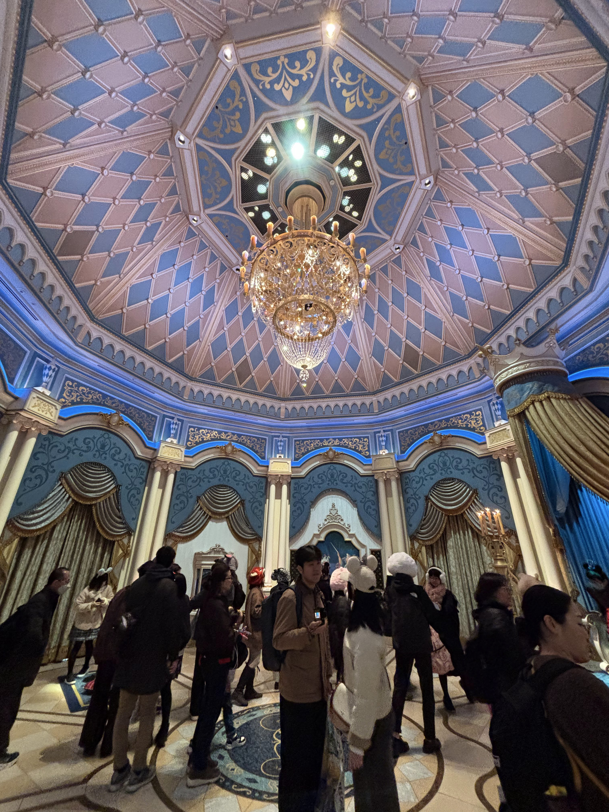

Cinderella Castle

I. 夢が現実になる場所
ワールドバザールを抜け、どこまでも続く青空のもと、前方にそびえ立つ美しい「シンデレラ城」。一歩一歩近づくごとに、日常の騒がしさは遥か遠くへ消え去り、きらめく童話の世界に迎え入れられます。
このお城には、単なるランドマークとしての枠を超えた、イマジニアたちの細やかな「おもてなしの魔法」が散りばめられています。お城を見上げたときの高揚感、城門をくぐり抜けるときのどこか特別な空気。それらすべてが、私たちを物語の主人公へと優しく仕立て上げてくれます。

II. 絵本の世界へ誘う色彩と「優しい配慮」
お城を近くから眺めてみると、手前の重厚な城壁の石造りから、天に伸びる塔へ向かうにつれて優しく明るいクリーム色へとグラデーションが施されているのがわかります。この色彩は、東京の柔らかな光のもとで最も美しく輝き、温かみと高揚感をゲストに与えるように何度も計算して選ばれました。
また、これまでに実施された大規模な改修工事では、お城を覆う工事用シートに実物そっくりのシンデレラ城が描かれていました。パークを訪れたすべてのゲストの夢や思い出を、一瞬たりとも壊したくないというイマジニアたちによる「見えない優しさ」が、この美しいお城には息づいているのです。
🏰 【BGS Pick Up】レストランの夢をのせた「フェアリーテイル」
実は開園当初、お城のなかに贅沢なレストランをオープンする計画がありました。しかし諸条件からそれは幻の計画となり、その代わりに数々の冒険を生んだ「シンデレラ城ミステリーツアー」が誕生しました。
そして現在、城内は「シンデレラのフェアリーテイル・ホール」として生まれ変わり、美しいステンドグラスやシンデレラの物語を描いた数々の美術品が並ぶ、優雅なプリンセスの空間として私たちを歓迎してくれます。

III. 「空を近くする」視覚の魔法
プラザの広場から、ゆっくりとお城全体を見上げてみてください。実際よりも遥かに高く、まるで本当に雲に届きそうな壮大さを感じませんか？
ここには、上に行くほど窓や石垣、レンガのサイズを少しずつ小さく描いていく「強制遠近法」という視覚の魔法がかけられています。地上から見上げるゲストの瞳には、パースペクティブ（遠近感）が伸び、実際よりもはるかにスケールの大きな絵本の世界として映し出されるのです。工学的な現実を感じさせず、ただ物語としての純粋な美しさだけを伝える、イマジニアこだわりの技法です。

IV. 夜が魅せる、色とりどりのドレスアップ
太陽が沈み、静かに夕闇が降りてくる頃。お城を囲むお堀の水面は、優しい光に照らされた青き尖塔をまるで鏡のように静かに映し出します。
シンデレラ城は、季節の移り変わりや節目のセレブレーションごとに、色鮮やかな光やデコレーションで華やかに着飾ります。アニバーサリーを祝う黄金の輝きや、ディズニーの夢を届けるプロジェクションマッピングなど、お城自体が一つの生きたキャンバスとなり、私たちの心に永遠に残る特別な夜をプロデュースしてくれます。

V. お城の中に隠された、秘密の回廊と光のドーム
お城のなかへと一歩入ると、そこは外の広場とはまた違った、静粛で神秘的な空気が漂っています。
重厚な石造りのアーチに包まれた回廊のウェイティングスペース。頭上には、古い騎士たちの邸宅を思わせる、鉄細工の重厚で美しいシャンデリアが揺れています。その先に進むと、パステルブルーとゴールドの繊細な装飾で縁取られた八角形の高天井（ドーム）が現れ、まばゆいクリスタルのシャンデリアが空間全体に虹色の光の粒を優しく降らせています。そこにいるだけでプリンセスの優雅な余韻に浸れる、こだわり抜かれたロイヤルな空間デザインです。


VI. 世界のディズニー城 徹底比較
世界中のディズニーパークにあるお城は、それぞれの土地や物語に合わせて、異なるコンセプトでデザインされています。建築の冷たい数字は置いておき、それぞれの「デザインコンセプト」と「見どころ」を夢あふれる視点で比較してみましょう。
| パーク＆お城の名前 | 高さ | デザインコンセプト | 夢が息づく見どころ |
|---|---|---|---|
| 東京DL シンデレラ城 |
51 m | 青い尖塔と優しいクリームの色彩 映画『シンデレラ』より |
美しいガラスモザイクで描かれた物語 of the picture with wild ducks living in the moat. |
| マジックキングダム シンデレラ城 |
58 m | 童話の世界の完全なる再現 ディズニーファンタジーの総本山 |
城内に実在する王宮レストランや、限られたゲストしか入れない「秘密のスイートルーム」の伝説。 |
| ディズニーランド（CA） 眠れる森の美女の城 |
24 m | 初代パークの温かなシンボル 眠れる森の美女の物語 |
ウォルトとお城を創ったイマジニアたちが手ずから築いた、低めで温かみのある佇まい。 |
| ディズニーランド・パリ 眠れる森の美女の城 |
43 m | ヨーロッパの城郭文化への敬意 ピンク色の幻想的なシルエット |
らせん状に伸びる不思議な木々と純金の箔。地下深くには「巨大なドラゴン」の棲み処。 |
| 香港DL キャッスル・オブ・マジカル・ドリーム |
51 m | 12人のプリンセスたちの夢の融合 | それぞれのヒロインのモチーフがちりばめられた、形もカラーも異なる個性豊かな尖塔たち。 |
| 上海DL エンチャンテッド・ストーリーブック・キャッスル |
60 m | すべてのプリンセスの願いを象徴 | 最頂部で輝くゴールデン・ピオニー（牡丹）。城内を水流が通り抜けるボートアトラクション。 |
VII. 堀を泳ぐカルガモと、お城が起こす小さな奇跡
お城を囲む穏やかなお堀。そこをすいすいと泳ぐ愛らしいカルガモたちを見かけたら、ぜひ優しく見守ってみてください。彼らは人工のオーディオ・アニマトロニクスではなく、居心地のよい魔法の空気に誘われていつの間にかここに住み着くようになった、本物のカルガモたちです。
お堀のほとりや、城内の大広間で聞こえる優しい笑い声。お城は、今この瞬間も、訪れるゲスト一人ひとりの「思い出」という名の魔法によって、きらきらと輝きを放ち続けています。
💙 キャストが紡ぐ、ガラスの靴のぬくもり
「シンデレラのフェアリーテイル・ホール」のガラスの靴や玉座の前では、まいにち心温まる奇跡が生まれています。
かつてここでお互いに愛を誓い、プロポーズを成功させたカップルが、数年後に嬉しそうにお子様を連れて「ただいま！」と報告に来てくれたり、ドレスを着てちょっぴり緊張している小さなプリンセスに、キャストがそっと優しくロイヤルなおもてなしを届けたり。シンデレラ城は、私たちゲストの夢を優しく抱きしめ、叶えてくれる場所なのです。